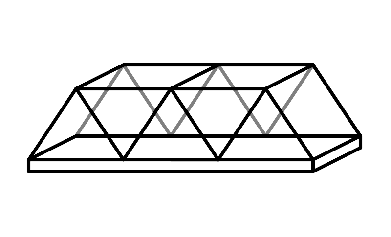

Introducción a las Estructuras¶
{kind=link}
Una estructura es un conjunto de elementos destinados a soportar esfuerzos sin romperse ni deformarse.
Existen multitud de estructuras en la naturaleza, desde el tronco que sostiene un árbol, hasta nuestro esqueleto. Todas ellas soportan esfuerzos para permitirnos superar la gravedad y movernos.
En el ámbito técnico, la construcción de estructuras para fabricar viviendas, barcos o vasijas es tan antigua como la propia civilización. Hoy en día las estructuras permiten construir edificios, automóviles, aviones, puentes, torres de alta tensión, presas y un sinfín de aparatos sin los cuales el mundo actual, tal y como lo conocemos, no existiría.
Tipos de estructuras¶
Las estructuras se pueden clasificar de varias formas dependiendo de su origen o de sus elementos.
Dependiendo de su origen:
| Naturales | Tronco de un árbol. Caparazón de tortuga. Esqueleto humano. Conchas de moluscos. |
| Artificiales | Puente colgante. Estructura de un edificio. Carcasa de ordenador. Grúa de obra. |
Dependiendo de sus elementos:
| Masivas | Formadas por una gran masa de material sin apenas huecos. Presa de agua. Pirámide. Muralla china. Catedral. |
| Abovedadas | Formadas por arcos y bóvedas. Techo de iglesia. Puente romano. Acueducto. Panteón. |
| Trianguladas | Formadas por barras unidas entre sí en triángulos. Grúa de obra. Torre Eiffel. Torre de alta tensión. |
| Entramadas | Formadas por elementos verticales y horizontales. Estructura de edificio. Sillas y mesas. |
| Colgantes | Formadas por cables que soportan las cargas. Teleférico. Puente atirantado o puente colgante. Grúa de obra. |
| Laminares | Formadas por una lámina o pared delgada. Cuenco. Caparazón de tortuga. Casco para moto. |
Dependiendo de su movimiento:
| Estructuras móviles | Se pueden desplazar o están articuladas. Soportan cargas sólo en un sentido y no en otros. Puerta con bisagra. Puerta deslizante. Puente levadizo. Silla con ruedas. Grúa. |
| Estructuras fijas | No se desplazan ni se mueven. Puente. Edificio. |
Ejercicios¶
Enumera cinco estructuras naturales y cinco artificiales.
Enumera cinco estructuras masivas.
Enumera cinco estructuras abovedadas.
Enumera cinco estructuras trianguladas
Enumera cinco estructuras entramadas
Enumera cinco estructuras colgantes
Enumera cinco estructuras laminadas
Indica las diferencias entre las estructuras trianguladas y entramadas
Clasifica las siguientes estructuras:
- Acueducto
- Caparazón de tortuga
- Carcasa de ordenador
- Casco
- Conchas de moluscos
- Cuenco
- Esqueleto humano
- Estructura de edificio
- Grúa de obra
- Iglesia
- Mesa
- Muralla china.
- Pirámide.
- Presa de agua.
- Puente atirantado.
- Puente colgante.
- Puente romano
- Silla
- Teleférico
- Torre de alta tensión
- Torre Eiffel
- Tronco de un árbol
Indica a qué tipo de estructura se refiere cada una de las siguientes frases:
- Formada por cables que soportan las cargas.
- Formada por elementos verticales y horizontales.
- Formada por arcos y bóvedas.
- Formada por una gran masa de material sin apenas huecos.
- Formada por una lámina o pared delgada.
- Formada por barras unidas entre sí en triángulos.